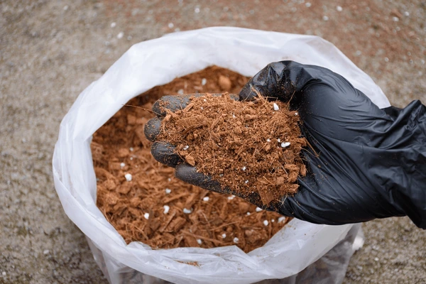
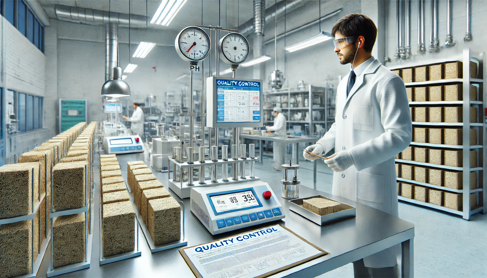

ஆய்வக சோதனைகள்
விரிவான தர பகுப்பாய்வுக்கான நவீன சோதனை வசதிகள்
- இயற்பியல் பண்பு சோதனைகள்
- வேதியியல் பகுப்பாய்வு
- தர சரிபார்ப்பு
ISO சான்றிதழ்
ISO 9001:2015 சான்றிதழ் பெற்ற தர மேலாண்மை அமைப்பு
- வழக்கமான தணிக்கைகள்
- தர ஆவணங்கள்
- செயல்முறை இணக்கம்
தொடர்ச்சியான மேம்பாடு
வழக்கமான தர தணிக்கைகள் மற்றும் செயல்முறை மேம்படுத்தல்
- செயல்திறன் கண்காணிப்பு
- தர போக்கு பகுப்பாய்வு
- செயல்முறை மேம்படுத்தல்
எங்கள் தரக் கட்டுப்பாட்டு செயல்முறை
உற்பத்தியின் ஒவ்வொரு கட்டத்திலும் விரிவான தர நடவடிக்கைகள்
01
சப்ளையர் ஒப்புதல் செயல்முறை
மூலப்பொருள் சப்ளையர்கள் தொடர்ச்சியான தரம் மற்றும் நம்பகத்தன்மையை உறுதிப்படுத்த ஒரு விரிவான ஒப்புதல் செயல்முறையை கடந்து செல்கின்றனர்.
- விரிவான மதிப்பீடு
- செயல்முறை சரிபார்ப்பு
- தர கண்காணிப்பு
02

உள்வரும் பொருள் தர சோதனை
உள்வரும் பொருட்களின் விரிவான பகுப்பாய்வு உற்பத்தி முழுவதும் தொடர்ச்சியான தரத்தை உறுதிப்படுத்துகிறது.
- ஈரப்பதம் பகுப்பாய்வு
- EC மற்றும் pH சோதனை
- மாசு மதிப்பீடு
03

செயல்முறை தர சோதனைகள்
உற்பத்தி செயல்முறையின் ஒவ்வொரு கட்டத்திலும் விரிவான தரக் கட்டுப்பாடு.
கழுவுதல் & உலர்த்துதல்
- ஈரப்பதம் கட்டுப்பாடு
- வெப்பநிலை கண்காணிப்பு
- தர சரிபார்ப்பு